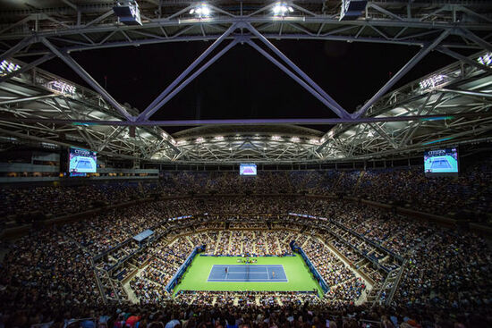

アーサーアッシュ・スタジアム
ニューヨーク市クイーンズ区のフラッシング・メドウのUSTAビリー・ジーン・キング・ナショナル・テニス・センター内にある世界最大のテニス専用競技場。フラッシング・メドウズ・コロナ・パークという広大な公園の中にありますが、この公園は1964年・1965年のニューヨーク万博の跡地でもあります。よくテレビに映る巨大な地球儀は、万博の際に造られたものです。パーク内には湖や自転車道、美術館や科学館など、憩い・スポーツ・文化と様々に楽しめる施設が整っています。
タイムズスクエア
タイムズスクエア (Times Square) は、世界の交差点 (Crossroads of the World) と呼ばれるニューヨークで最も賑やかな広場で、マンハッタンの中心にあたり、多くの地下鉄の路線も停まる便利なロケーションです。周辺にはホテルやレストランも多く、特に旅行者に人気のエリアとなっています。ニューヨーク旅行中、タイムズスクエアに滞在する人はもちろん、写真スポットとして訪れたり、ミュージカル鑑賞、またはアトラクションを楽しみに訪れたりと、一度は立ち寄ることの多いエリアです。
自由の女神
自由の女神は、マンハッタンの南端から約2㎞離れた場所、ニューヨーク湾のリバティアイランド（Liberty Island）という小さな島にあります。アメリカ合衆国の独立100周年（1876年）を祝って、独立を支援したフランスから、変わらぬ友好のしるしとして贈呈されました。
ブルックリン橋
1883年に完成したアメリカ合衆国で一番古い吊り橋の一つです。当初はニューヨーク・ブルックリン橋と呼ばれていましたが、現在はブルックリン橋と呼ばれています。 また、この橋は鋼鉄のワイヤーを使用した世界で初めての吊橋でもあり、その長さは1,834mです。 1964年にはアメリカ合衆国国定歴史建造物に認定され、ニューヨーク市だけでなくアメリカ合衆国としても重要な建造物の一つです。 ブルックリン橋の中央径間486mですが、建設当時は中央径間500m近くの橋を架けるのは不可能と思われていましたが約14年をかけて建設されました。